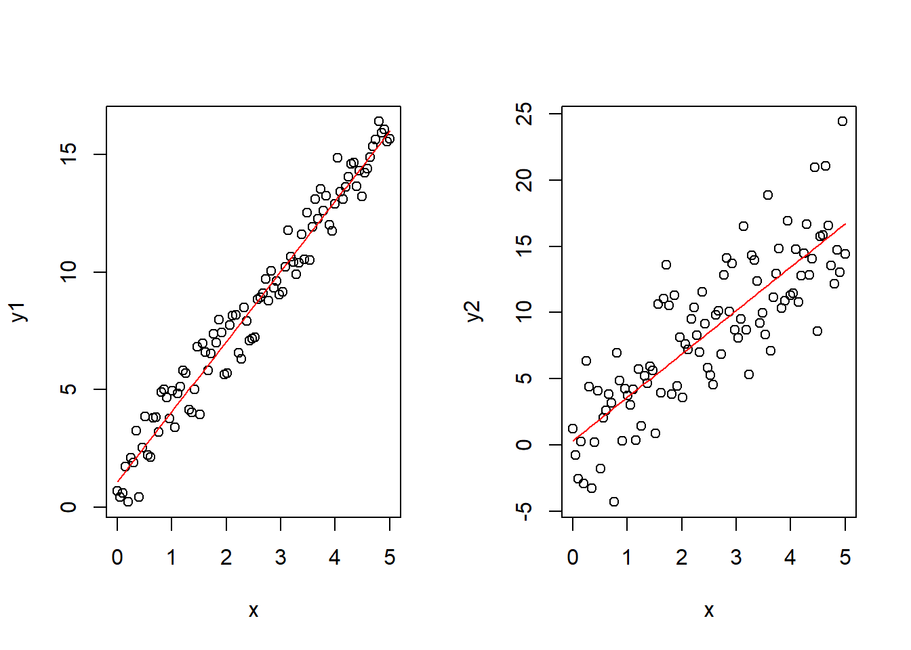
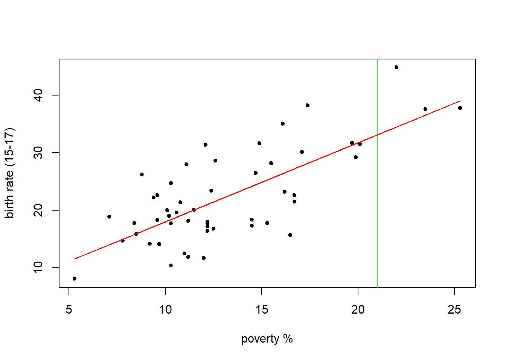

Attaching package: 'kableExtra'
The following object is masked from 'package:dplyr':
group_rows
library(htmlwidgets)
Statistical Learning
Suppose we have a data set: \(X=[X_1,X_2...X_p]\) Each \(X_n\) is a covariate (also predictor variable or independent variable). Then we have y, the response/outcome/dependent variable.
Statistical learning is to find a function f such that y=f(X) such that \(y_i=f(X_i)=f(X_{i1} ... X_{ip})\)
We should have a way to map covariates to the response. There are different flavors of statistical learning:
Unsupervised Learning (no y, we need to figure out what it could be)
Semi-supervised learning (We have far more total observations than observations including a y-value)
Reinforcement learning (the algorithm is “punished” for doing something “wrong”)
We will focus on regression today. We will start with an example from the U.S. Census regarding teen birth rate and poverty in each state.
# load in the datadf <-read_tsv("https://online.stat.psu.edu/stat462/sites/onlinecourses.science.psu.edu.stat462/files/data/poverty/index.txt")
Rows: 51 Columns: 6
── Column specification ────────────────────────────────────────────────────────
Delimiter: "\t"
chr (1): Location
dbl (5): PovPct, Brth15to17, Brth18to19, ViolCrime, TeenBrth
ℹ Use `spec()` to retrieve the full column specification for this data.
ℹ Specify the column types or set `show_col_types = FALSE` to quiet this message.
Least squares regression is calculated by dropping a vertical line (residual=\(y-\hat{y}\)) from each data point to the fit line. The residual is then squared and those squared residuals are summed to get a sum of squares. We want to find the line with the lowest sum of squares.
The lm() function creates this model for us in R.
model <-lm(y~x)sum(residuals(model)^2)
[1] 1509.635
summary(model)
Call:
lm(formula = y ~ x)
Residuals:
Min 1Q Median 3Q Max
-11.2275 -3.6554 -0.0407 2.4972 10.5152
Coefficients:
Estimate Std. Error t value Pr(>|t|)
(Intercept) 4.2673 2.5297 1.687 0.098 .
x 1.3733 0.1835 7.483 1.19e-09 ***
---
Signif. codes: 0 '***' 0.001 '**' 0.01 '*' 0.05 '.' 0.1 ' ' 1
Residual standard error: 5.551 on 49 degrees of freedom
Multiple R-squared: 0.5333, Adjusted R-squared: 0.5238
F-statistic: 56 on 1 and 49 DF, p-value: 1.188e-09
Thursday, Jan 19
TIL
Include a very brief summary of what you learnt in this class here.
Today, I learnt the following concepts in class:
Details of Linear Regression (hypotheses, p-values, beta variables, etc.)
R-squared
Predicting using the linear regression model
Provide more concrete details here:
When creating a model, we want y as a function of x. In R this looks like:
formula(y~x)
y ~ x
typeof(formula(y~x))
[1] "language"
A linear regression model in R is called using the Linear Model function lm().
model <-lm(y~x)model
Call:
lm(formula = y ~ x)
Coefficients:
(Intercept) x
4.267 1.373
x2<-x^2model2 <-lm(y~x+x2)model2
Call:
lm(formula = y ~ x + x2)
Coefficients:
(Intercept) x x2
10.60211 0.43733 0.03128
summary(model)
Call:
lm(formula = y ~ x)
Residuals:
Min 1Q Median 3Q Max
-11.2275 -3.6554 -0.0407 2.4972 10.5152
Coefficients:
Estimate Std. Error t value Pr(>|t|)
(Intercept) 4.2673 2.5297 1.687 0.098 .
x 1.3733 0.1835 7.483 1.19e-09 ***
---
Signif. codes: 0 '***' 0.001 '**' 0.01 '*' 0.05 '.' 0.1 ' ' 1
Residual standard error: 5.551 on 49 degrees of freedom
Multiple R-squared: 0.5333, Adjusted R-squared: 0.5238
F-statistic: 56 on 1 and 49 DF, p-value: 1.188e-09
What do the hypotheses for regression look like?
The null hypothesis is that there is no linear relationship between y and x. This means that \(\beta_1=0\)
The alternate hypothesis is that there is a linear relationship, so \(\beta_1 \neq0\)
To summarize, \(H_0: \beta_1=0, H_A:\beta_1\neq0\)
When we see a small p-value, then we reject the null hypothesis in favor of the alternate. This means that there is a significant linear relationship between y and x. That is to say, there is significant evidence of a correlation between x and y.
The p-value at the bottom of the summary is based on the F statistic, which tests the overall model instead of a specific covariate.
** R-Squared**
library(broom)summary(model) %>% broom::tidy()
# A tibble: 2 × 5
term estimate std.error statistic p.value
<chr> <dbl> <dbl> <dbl> <dbl>
1 (Intercept) 4.27 2.53 1.69 0.0980
2 x 1.37 0.184 7.48 0.00000000119
Some terminology: x is our covariate, y is our response, \(\hat{y}\) are the fitted values, and \(y-\hat{y}\) are the residuals.
Sum of squares for residuals: \(SS_{Res}=\sum_{i=1}^n e_i^2=\sum_{i=1}^n (y_i-\hat{y}_i)^2\)
Sum of squares for regression: \(SS_{Reg}=\sum_{i=1}^n(\hat{y}_i=\bar{y})^2\)
Sum of squares total \(SS_{Tot}=\sum_{i=1}^n(y_i-\bar{y})^2\)
\(R^2\) is another important value and is given by \(R^2=\frac{SS_{Reg}}{SS_{Tot}}\)
Examples:
x <-seq(0,5,length=100)b0 <-1b1 <-3y1 <- b0+b1*x+rnorm(100)y2 <- b0+b1*x+rnorm(100)*3par(mfrow=c(1,2)) # lets you create side by side plots. This one is 1 row, 2 cols.model1 <-lm(y1~x)model2<-lm(y2~x)plot(x,y1)curve(coef(model1)[1]+coef(model1)[2]*x, add=T, col="red")plot(x, y2)curve(coef(model2)[1]+coef(model2)[2]*x,add=T,col="red")

summary(model1)
Call:
lm(formula = y1 ~ x)
Residuals:
Min 1Q Median 3Q Max
-1.84749 -0.60354 0.04856 0.61525 1.70192
Coefficients:
Estimate Std. Error t value Pr(>|t|)
(Intercept) 1.08732 0.16702 6.51 3.22e-09 ***
x 2.98474 0.05771 51.72 < 2e-16 ***
---
Signif. codes: 0 '***' 0.001 '**' 0.01 '*' 0.05 '.' 0.1 ' ' 1
Residual standard error: 0.8414 on 98 degrees of freedom
Multiple R-squared: 0.9647, Adjusted R-squared: 0.9643
F-statistic: 2675 on 1 and 98 DF, p-value: < 2.2e-16
summary(model2)
Call:
lm(formula = y2 ~ x)
Residuals:
Min 1Q Median 3Q Max
-7.1117 -2.3201 0.1339 1.8130 7.8502
Coefficients:
Estimate Std. Error t value Pr(>|t|)
(Intercept) 0.3296 0.6335 0.52 0.604
x 3.2785 0.2189 14.98 <2e-16 ***
---
Signif. codes: 0 '***' 0.001 '**' 0.01 '*' 0.05 '.' 0.1 ' ' 1
Residual standard error: 3.191 on 98 degrees of freedom
Multiple R-squared: 0.696, Adjusted R-squared: 0.6929
F-statistic: 224.4 on 1 and 98 DF, p-value: < 2.2e-16
R-squared and the p-value are independent of each other; just because it is a significant model doesn’t mean the model fits closely.
Prediction
Return to the poverty dataset:
Suppose we have a new state formed whose PovPct value is 21:
x <- df$PovPcty <- df$Brth15to17plt()abline(v=21,col="green")lines(x,fitted(lm(y~x)), col="red")

We can look at the regression line to predict the teen birth rate in this state by finding the point on the line where x=21. In R, we can use predict() to do this:
new_x<-data.frame(x=c(1:21))new_y<-predict(model,new_x)plt()for(a in new_x){abline(v=a, col="green")}lines(x,fitted(lm(y~x)),col="red")points(new_x%>%unlist(),new_y%>%unlist(),col="purple")